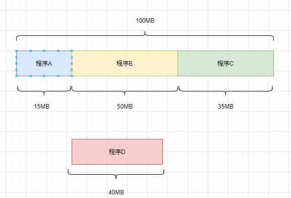
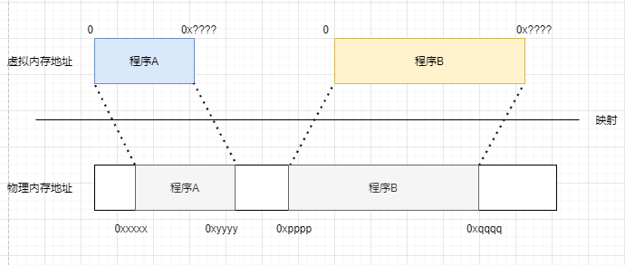
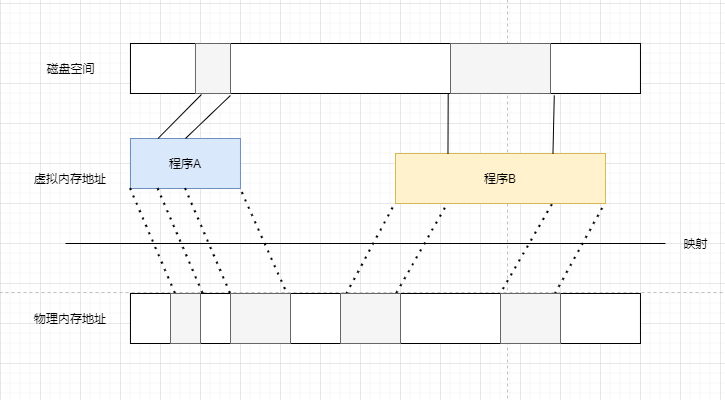

在程序运行时,都会被加载到内存中,而使用的内存地址都是操作系统提供的虚拟地址,当要使用数据时,会根据虚拟地址找到实际的物理内存地址,然后找到数据使用。
地址空间不隔离
为了最大限度的使用内存资源,程序占用的内存地址如上,都是连续的,如上图
如果有恶意的程序,或者错误的程序,它们可以访问到其他程序使用的内存地址,从而进行破坏
所以,为程序直接分配物理内存地址的问题之一就是程序数据不安全
内存使用率低

如上图,当需要程序D加载到内存中运行时,发现内存已经被占满,需要停止一些程序释放出内存空间,因为程序数据需要占用连续的内存空间,所以只好把程序B停止,将数据存入磁盘中
上述提到的操作存在大量数据的换入换出,消耗资源严重,而且内存的使用率还低(上面的情况,有10MB空间就没有使用)
程序运行的地址不确定
每次将程序在加载到内存中的位置是不同,所以程序数据起始物理内存地址也是不同,那么访问数据和调用函数的跳转到地址也是不固定的,这就涉及到程序的重定位问题
虚拟内存地址故名思意,这个地址是假的,但也不完全是假的,更准确的来说是物理内存地址的映射
为程序分配的虚拟内存地址,对程序来说就是一段起始地址为0的连续地址,程序能访问的地址也被限制到了这一段地址之间

通过这种方式成功的解决了上面的地址空间不隔离和程序运行的地址不确定的问题
在上面的描述提到,为了给其他程序腾出内存空间,需要将程序从内存上卸载,将大量数据存到磁盘中。
问题就在这里,程序占用100MB,那么就要进行100MB数据的传输,这样的操作看起来颗粒度很大,严重损耗性能
其实在某个时间段内,程序运行只会频繁的用到一小部分数据,也就是说,其他的大部分数据在这个时间段内是不会被用到的。
所以大神们想到将程序对应的内存块划分为更小的内存块(内存块之间不是连续的),会频繁用到的数据加载到内存中,偶尔使用的数据放到磁盘中,需要时再加载内存中使用

这样一来内存使用率就提高了
(1)每个程序在内存中占用的内存数据量少了,程序从内存中卸载的速度就提高了
(2)内存块划分小了(一个大概是4KB),内存使用的更加灵活,这样内存中的几MB的空间也可以被更好的使用
(3)内存闲置的空间变多了,可供更多程序使用